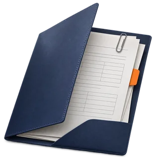
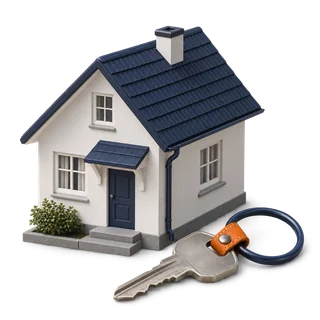
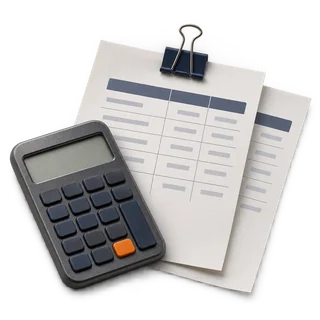

Помощь в получении банковских продуктов
Кредит не одобряют? Разберём вашу ситуацию и предложим дальнейшие шаги
Обсудите задачу со специалистом. После заключения договора разберём вашу ситуацию и подготовим рекомендации для обращения в банк.
- С 2015 годаОпыт в кредитной сфере
- Сотни клиентовЗа время практики
- Документы на рукиИ отчётность по работе
- Конфиденциальность клиентов
Не получается самостоятельно, не хотите залог или ищете условия выгоднее?
К нам обращаются с разными задачами. В том числе, когда:

Не удаётся получить кредит самостоятельно
Нужна помощь, чтобы разобраться в своей ситуации и подготовиться к дальнейшему обращению в банк.

Не хочется предоставлять залог
Хотите рассмотреть возможность кредита без залога имущества.
Есть небольшие просрочки
Важно учесть их при анализе ситуации и выборе дальнейших действий.

Хочется найти условия выгоднее
Нужны рекомендации с учётом вашей цели и финансовой ситуации.
У вас другая ситуация? Расскажите о ней специалисту — обсудим вашу задачу и возможность сотрудничества.
Обсудить свою задачуРекомендации для дальнейших действий
После заключения договора запрашиваем необходимую информацию и изучаем вашу ситуацию. На этой основе формируем рекомендации для дальнейшего обращения в банк.
Изучаем исходные данные
Учитываем предоставленную информацию о вашей финансовой ситуации и задаче.
Анализируем ситуацию
Рассматриваем ваши обстоятельства перед подготовкой рекомендаций.
Объясняем дальнейшие шаги
Вы получаете рекомендации, которые помогут подготовиться к взаимодействию с банком.
Как проходит работа со специалистом
Обсуждаем задачу и условия
Вы рассказываете, какая помощь нужна. Уточняем порядок сотрудничества и оплаты.
Заключаем договор
Условия фиксируются в договоре. Документы предоставляются вам на руки.
Собираем информацию и проводим анализ
После заключения договора запрашиваем необходимые сведения и изучаем вашу ситуацию.
Выдаём рекомендации
Объясняем дальнейшие действия для подготовки к обращению в банк.
Предоставляем отчётность
Договор и документы
Фиксируем перечень услуг, стоимость и порядок оплаты. Документы предоставляем на руки.
Юридический отдел
Юридический отдел занимается документальной стороной сотрудничества с клиентами.
Конфиденциальность
Сохраняем конфиденциальность вашей информации. Не передаём данные третьим лицам без вашего согласия.
Есть возможность оплатить после получения кредита
Обычно услуги оплачиваются сразу после заключения договора. Также компания предоставляет возможность оплаты после получения кредита — такой порядок согласовывается отдельно.
Стоимость, момент оплаты и условия расчётов фиксируются в договоре. Обсудите их со специалистом до подписания.
Уточнить условия оплатыЧто важно знать до начала работы
Можно обратиться, если банк уже отказал?
Да. К нам обращаются, когда получить кредит самостоятельно не удалось. После заключения договора анализируем ситуацию и выдаём рекомендации для дальнейших действий.
Рассматриваете ситуации с небольшими просрочками?
Да, такие обращения входят в нашу практику. Небольшие просрочки учитываются при анализе вашей ситуации.
Можно обсудить кредит без залога?
Да. Расскажите специалисту, какой вариант кредита рассматриваете. Дальнейшую работу и условия сотрудничества согласуем до заключения договора.
Какие документы я получу?
При заключении договора вы получаете документы на руки. По выполненной работе предоставляем отчётность.
Начните с разговора со специалистом
Не удалось получить кредит, не хотите предоставлять залог или ищете условия выгоднее? Расскажите, с чем столкнулись. Начнём с вашей задачи и условий сотрудничества.
ПраймСоц Финанс оказывает информационно-консультационные услуги и не выдаёт кредиты. Решение о выдаче кредита, сумме, ставке и других условиях принимает банк.